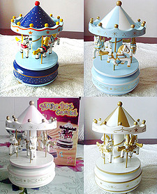
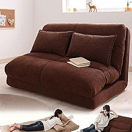
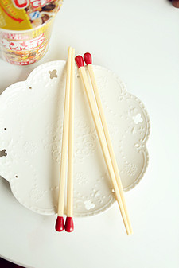
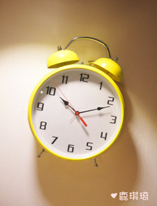

【乖怪蜜桃.搭搭配】~貂绒嫁到~今年好流行的材质呢~跟风购入~颜色质感都好喜欢de 说呢~重点还很保暖

夏天花裤子是一定要有的哦！
超长款的雪纺开衫，很仙很气场呢，敞开穿比较大气，扣起来系个腰带，很淑女哈
二零一二，十月。去年夏季最喜欢的雏菊小衬衫+牛仔长裙 还有最爱的复古手工包

还有4年就奔3了，现在就拼命地装嫩吧，不然真到30大几岁还这副模样真真是恶心透了 啊哈哈~~ 装嫩必备蛋糕裙！
依旧牛仔上衣和室内照。不要以为主角是衣服，其实是鞋子。

很简单的大学生而已